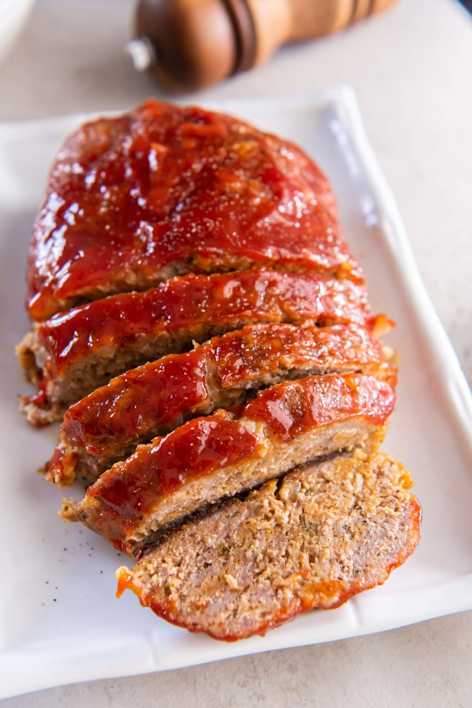

Turkey Meatloaf

- Meal
- Dinner
- Serves
- 6 (with leftovers)
- Protein
- turkey
- Cook
- oven · 20 min active / 75 min total · easy
- Make-ahead / leftovers
- yes / yes
- Mediterranean
- no
- WW tier
- moderate
- Status
- Trying out (probation)
Kristine's tender turkey meatloaf — sautéed onion and garlic, Italian seasoning, breadcrumbs, and a tangy ketchup-brown sugar glaze. Classic American comfort the deck didn't have. Doubled into two free-form loaves on one sheet pan.
Ingredients
Meatloaf (two loaves)
- 2 Tbsp olive oil
- 2 cups finely chopped yellow onion
- 4 cloves garlic, minced
- 2 large eggs
- 6 Tbsp ketchup
- 4 tsp Worcestershire sauce — anchovy-free only, or leave out (see Notes)
- 2 tsp Italian seasoning
- 1 tsp garlic powder
- 1 tsp salt
- 1/2 tsp black pepper
- 1 cup Italian-seasoned breadcrumbs
- 2 lb ground turkey
Glaze
- 1/2 cup ketchup
- 2 Tbsp brown sugar
- 2 tsp apple cider vinegar
Method
- Heat oven to 375°F. Line a rimmed sheet pan with foil and grease it.
- Cook the onion in the olive oil over medium 3–4 minutes until soft; add garlic 30 seconds. Take off the heat.
- In a large bowl, combine eggs, ketchup, Worcestershire (if using), Italian seasoning, garlic powder, salt, and pepper. Stir in the onion mixture.
- Add breadcrumbs and turkey; mix with your hands until just combined.
- Shape two loaves on the pan, each about 6 × 4 1/2 × 1 1/2 inches.
- Whisk the glaze and brush it over the tops.
- Bake 45–60 minutes until the center reads 165°F. Rest 10 minutes, slice.
Notes
- Doubled from Kristine's 1 lb turkey / serves 6 — one loaf feeds this family thin; two gives dinner plus meatloaf sandwiches.
- Fish-free swap: standard Worcestershire (Lea & Perrins, most store brands) contains anchovies. Leave it out or buy an anchovy-free/vegan Worcestershire. Add 1 tsp soy sauce instead if you want the savory note.
- Sides that make it a balanced plate: roasted broccoli or green beans + mashed or roasted potatoes.
- Make-ahead: shape and glaze the loaves up to a day ahead, refrigerate, add ~10 minutes to the bake.
- Mediterranean ✗: poultry + olive oil, but no vegetables in the dish and breadcrumbs as the starch — 2 of 4 unless the sides do the work. moderate.